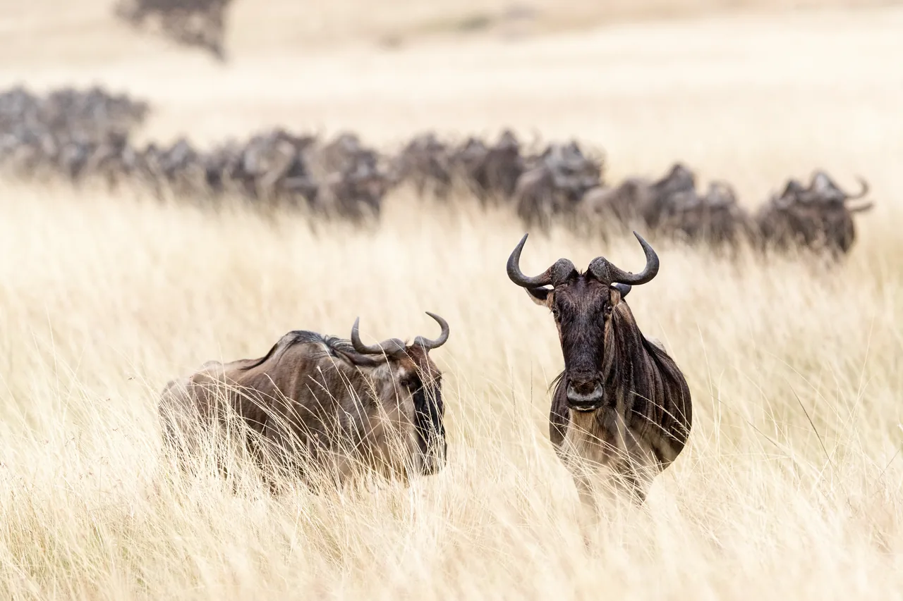
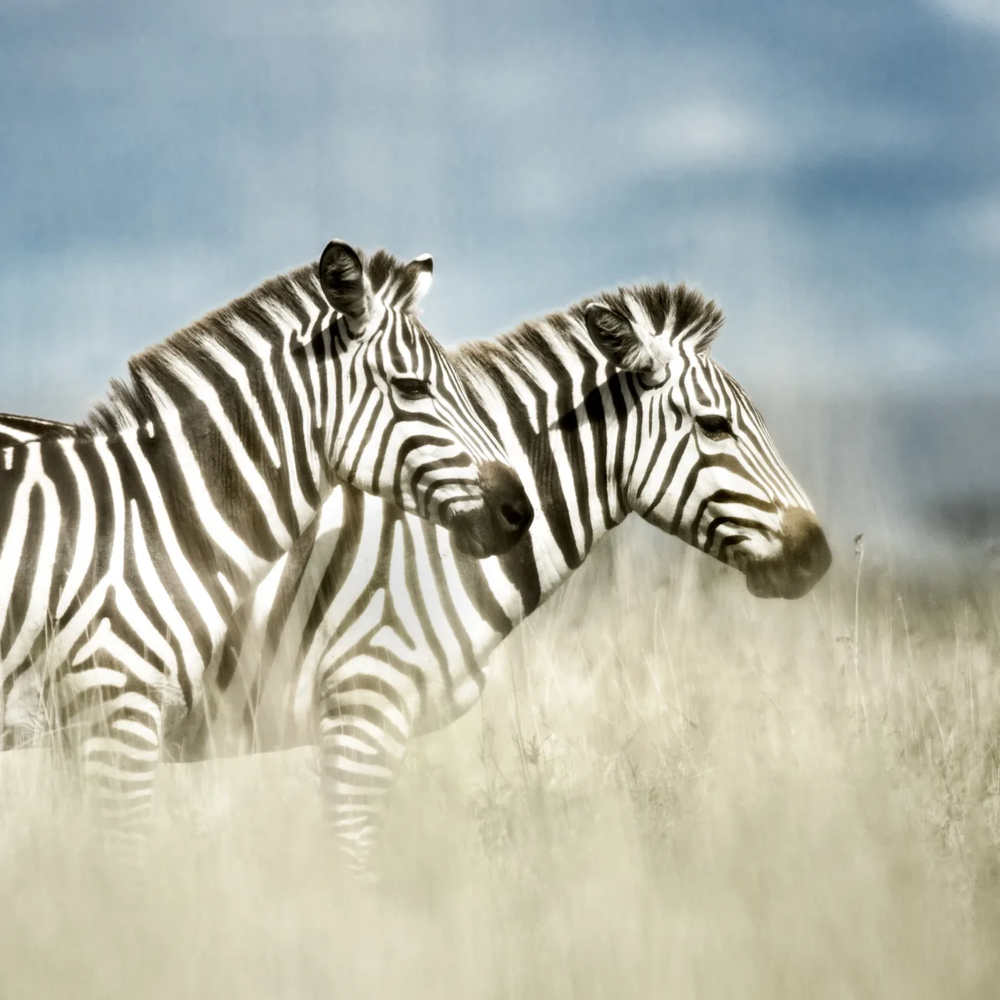

Nine landscapes, one wild heart.
From the endless Serengeti plains to the ancient Ngorongoro caldera and the turquoise shallows of Zanzibar. Explore where we travel, and when each place is at its best.
Find your place on the map.
Hover over a destination for a preview, or select it to explore in depth. Parks are drawn to their real positions, with the roads our guides drive.
Where would you like to wake up?

Serengeti National Park
Tanzania's most celebrated park, where the Seronera valley holds lions, leopards and cheetahs all year and the Great Migration moves across the plains in a great seasonal circle.
Explore Serengeti
Northern Serengeti and the Mara River
The remote northern Serengeti, where the Mara River winds through rolling hills and the herds gather to cross between July and October, watched closely by crocodiles and patient lions.
Explore Northern Serengeti
Ndutu and the Southern Plains
On the short-grass plains around Lake Ndutu, hundreds of thousands of wildebeest gather to give birth each year, drawing lions, cheetahs and hyenas into some of the most intense predator action anywhere.
Explore Ndutu
Ngorongoro Crater and Conservation Area
The world's largest intact volcanic caldera, a UNESCO World Heritage Site whose sheltered floor holds an extraordinary concentration of wildlife, including one of Tanzania's best chances of seeing black rhino.
Explore Ngorongoro
Tarangire National Park
A park of ancient baobabs and seasonal swamps where, in the dry months, the Tarangire River draws some of the largest elephant gatherings in northern Tanzania, along with lions, leopards and rich birdlife.
Explore Tarangire
Lake Manyara National Park
A compact, beautifully varied park at the foot of the Great Rift Valley escarpment, where groundwater forest gives way to open shoreline, hippo pools and the soda lake that gives it its name.
Explore Lake Manyara
Lake Eyasi
A remote, sun-baked soda lake below the Eyasi escarpment, home to the Hadzabe, among the last hunter-gatherers in Africa, and the pastoralist Datoga, known for their skill in metalwork.
Explore Lake Eyasi
Arusha and Arusha National Park
Our home town and the starting point of every northern safari, with Arusha National Park close by: Mount Meru's forested slopes, the Momella Lakes, colobus monkeys and walking safaris.
Explore Arusha
Zanzibar
The perfect counterpoint to safari: a short flight from Arusha to an island of turquoise water, white-sand beaches and Stone Town's winding lanes, steeped in centuries of Swahili, Arab and Indian Ocean history.
Explore ZanzibarThe year, at a glance.
Every month is good somewhere. Use this as a starting point and we will fine-tune it to the herds and the weather.
Not sure which month suits you?
Tell us your dates and what you dream of seeing. We will match the right parks to your season.

Let the land lead.
Choose the places that call to you and we will connect them into one seamless private journey.